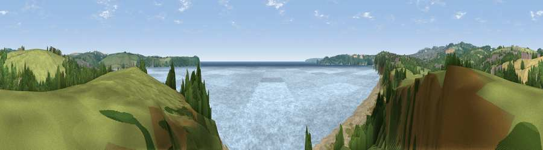

Viewpoint near Par
#11155 in England · top 22% of its area beats it · near Par · footpathWhere it is
The exact computed spot (SX 06575 52375). Click the marker for map links.
Public access: a public right of way passes within 2 m of this spot. Computed from Natural England's CRoW access layer and OpenStreetMap rights of way — not the legal definitive map. Always verify locally.
The view, rendered

A 360° render of this exact spot computed from the terrain model, tree cover and land cover — summer colours, afternoon light, calibrated against photographs of famous viewpoints. Real trees, hedges and buildings will differ in detail.
The panorama
Grey silhouette: terrain skyline in each direction (720 bearings, Earth curvature and refraction included). Dashed green: skyline with trees (+15 m) and buildings (+8 m) as obstacles. Blue strip: how far the ground is visible on each bearing.
Where the view opens
Wedge length = distance to the farthest visible ground on that bearing (vegetation-aware). Rings at 10, 25 and 50 km.
What fills the view
41% water · 25% grassland · 18% woodland · 11% bare ground · 3% cropland · 2% built-up
Angular shares of the visible panorama (visual magnitude), not map area. Landscape diversity 0.63 (0–1 Shannon).
Key numbers
More beautiful places nearby
The staircase of upgrades: each row has a higher view potential than everything closer. Driving times are estimates from straight-line distance, calibrated against real road routing — check an actual route before setting out.
| Place | Direction | Drive | Score |
|---|---|---|---|
| Viewpoint near St Blazey | NNW · 2 km | ~5 min | 62.8 |
| Viewpoint near Polruan | ESE · 3 km | ~8 min | 69.2 |
| Viewpoint near Trethurgy | NW · 4 km | ~10 min | 84.1 |
| Viewpoint near Stenalees | NW · 8 km | ~16 min | 88.0 |
| Viewpoint near Crackington Haven | N · 42 km | ~62 min | 88.1 |
| Viewpoint near Combe Martin | NNE · 109 km | ~134 min | 88.9 |
| Holdstone Hill | NNE · 110 km | ~135 min | 90.2 |
| The Knoll | ENE · 151 km | ~174 min | 91.0 |
50.33946, -4.71959 · source: screening · position refined by local search. Computed location — check access rights before visiting.